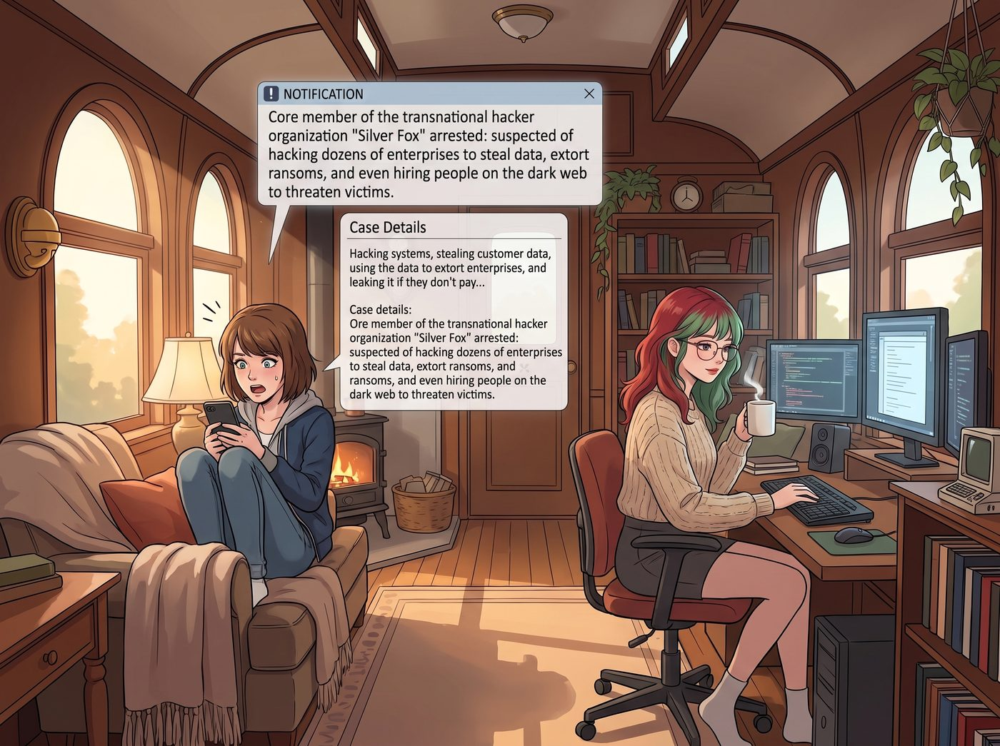
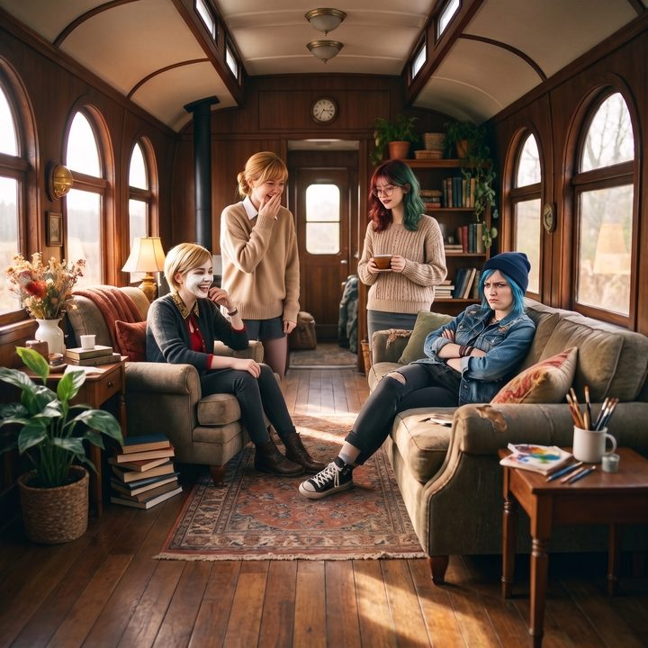

拿著核按鈕的小白兔


回到普吉特海灣的二號車廂後，生活似乎又恢復了那種吵鬧卻令人安心的節奏。
這天下午，Max 窩在沙發裡刷著手機，螢幕上突然跳出一則科技新聞的推播：
《跨國駭客組織「銀狐」核心成員落網：涉嫌入侵數十家企業竊取資料、勒索贖金，甚至在暗網雇人威脅受害者》
Max 點進去看了看案情。入侵系統、偷走客戶資料、拿著資料去勒索企業，不給錢就公開……
她慢慢地把目光從手機螢幕移開，投向了幾公尺外、正端著一杯熱牛奶、乖巧地在多螢幕工作站前敲擊鍵盤的 Lily。
一、同行
「那個……Lily？」Max 舉起手機，語氣裡帶著一絲掩飾不住的擔憂，「妳看看這個新聞。」
正在擦拭相機鏡頭的 Chloe 湊過來看了一眼，立刻發出了唯恐天下不亂的爆笑：「哇哦！實習生，FBI 已經在抓妳的同行了！妳準備好去聯邦監獄裡撿肥皂了嗎？聽說那裡的牢飯碳水超標喔！」
Max 瞪了 Chloe 一眼，然後認真地看著 Lily：「說真的，Lily。我知道妳跟他們不一樣。但妳剛來的那段時間，動不動就拿什麼聯邦條款、合規威脅去壓人……那個按鈕，妳按得有點太順手了。我只是怕有一天，它會走火。」
Lily 停下了敲擊鍵盤的手。
她轉過身，推了推圓框眼鏡。
二、區別
「首先，Max 學姐，我需要澄清一件事。」Lily 的語氣很平靜，「我從來沒有駭進過任何人的系統，一次都沒有。」
她走到白板前，拿起馬克筆，畫了一條清晰的界線。
「新聞裡的那些人，是闖進別人的系統，把不屬於他們的東西拿走，再拿著這些東西去威脅人。這叫犯罪。」
「而我做的事，大部分只是讀公開的資料、看懂別人沒耐心看的條款，然後知道該去哪一個窗口、填哪一張表格。」
「有什麼區別嗎？結果不都是讓對方很難受？」Chloe 挑了挑眉毛。
Lily 放下馬克筆，沉默了一會兒。
「……您說得對，Chloe 學姐。這就是 Max 學姐真正在擔心的事。」
她轉過頭，看著 Max，語氣難得地沒有任何術語：
「您說得沒錯。剛來的那段時間，我確實太常按那個按鈕了。有些時候，是為了保護大家；但也有些時候，我只是想證明，我可以。」
Max 愣了一下。她沒想到 Lily 會這麼直接地承認。
三、開火協議
「那現在呢？」Max 輕聲問，「妳手裡握著這麼可怕的能力，難道不會有那種……想把所有看不順眼的人都毀掉的衝動嗎？」
Lily 看著她，那雙深邃的眼睛裡，浮現出了一種屬於行政少女的、真實的清醒。
「Max 學姐，您還記得那個地下室嗎？」
她的目光掃過車廂裡的每一個人。
「在一個把人當成資產的系統裡，權力是用來控制別人的。我的父母就是這樣。他們用他們那套自以為是的權威來管我，越想控制我，就把我推得越遠。」
Lily 走到 Max 身邊，輕輕握住她拿著手機的手，把那則新聞按滅了。
「我不想變成他們那樣。所以我給自己定了一份開火協議：只有當二號車廂的生存真正受到威脅，或者各位學姐遭到不可逆的惡意傷害時，我才會動用那些灰色地帶的手段。其他時候，我只做普通人也做得到的事，只是做得比較仔細。」
她頓了頓，聲音輕了下來：
「因為我知道，一旦我開始為了私慾或純粹的報復去濫用這些能力，我就會變成跟我父母一樣的人。而那樣……我就不再配坐在這個車廂裡，喝 Kate 學姐泡的紅茶了。」
Kate 正好端著一壺剛泡好的大吉嶺紅茶走過來，笑著給 Lily 倒了一杯：「妳永遠都配得上，Lily。」
在一旁敷面膜的 Victoria 沒有說話，只是把自己那盤還沒動過的司康，往 Lily 的方向推了推。
Max 聽完，長長地舒了一口氣。
她看著眼前這個捧著茶杯、笑容乖巧無害的女孩，心裡那塊石頭終於落了地。Lily 也許是這個世界上最危險的行政怪物，但她的核心代碼裡，已經被她自己寫進了一道最強的安全鎖。
「好吧，」Max 拍了拍胸口，笑著說，「只要妳保證不會讓我們去聯邦監獄裡探監，妳愛填多少份表格就填多少份。」
四、咖啡
「放心吧，超級麥克斯。」Chloe 靠在沙發上，囂張地翹起二郎腿，「就算真有哪個不長眼的聯邦探員敢來敲二號車廂的門，Lily 大概會在一小時內讓他的退休金帳戶變成負數，然後把他調去阿留申群島的氣象站數海鳥。對吧，實習生？」
Lily 喝了一口紅茶，推了推眼鏡，認真地搖了搖頭。
「不會。」
Chloe 愣住了：「……蛤？」
「他只是在做他的工作，Chloe 學姐。」Lily 平靜地說，「我會給他泡一杯咖啡，請他坐下，然後把他需要的所有文件，按日期順序、整整齊齊地交給他。」
她想了想，又補了一句：
「還會附上目錄和頁碼。」
車廂裡安靜了一秒。然後 Max 第一個笑出了聲，Kate 捂著嘴，連 Victoria 都忍不住從面膜底下發出一聲悶笑。
只有 Chloe 癱在沙發上，一臉被背叛的表情：「我還以為能看到一場好戲……妳這也太無聊了吧！」
「這不是無聊，學姐。」Lily 乖巧地說，「這叫開火協議。」
Max 舉起寶麗來相機。
鏡頭裡，沒有危險的駭客，沒有暗網的陰謀。只有一個捧著紅茶的黑魔法師，和一群笑成一團的家人。
「喀嚓。」
相紙吐出，Max 在背面寫下：
『規則第九十三條：不要把我們家那個穿針織衫的財務官，跟那些闖進別人系統的駭客混為一談。她手裡有核按鈕，但她最驕傲的，是從來不按。而且，她有世界上最溫暖的防火牆。』